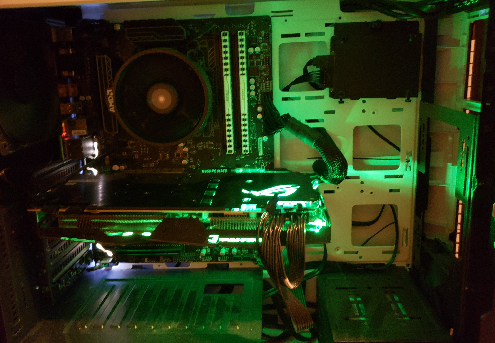

Configuring hardware for video editing and gaming.
Buying computer components seperately and building a PC yourself is a neccesity if you want to get an efficient computer that performs your needs at a fractional cost to prebuilt PC's. From a cursory glance, building a PC can seem to be a daunting task, but after just a little research anyone can do it. First you pick your parts for your particular needs. For instance, if someone wants to edit videos a high powered processor with multiple threads such as a Ryzen is essential.
PCPartPicker is an essential tool to choosing all of the computer components neccesary to fit your needs: https://pcpartpicker.com/ . This website offers guides to follow for common needs such as gaming. The website will also check for compability for any parts you choose. For instance, there are two common types of motherboards, mini atx and atx, depending on which one you choose other parts may or may not be compatible. PC part picker walks you through each component and lets you choose a part within your price range that is compatible with other parts.
All of the parts you will need are as follows: cpu, gpu, motherboard, ram, hardrive or ssd, psu, and a case. Optional components include: disk drive, extra ssd, after market cpu cooler, extra case fans. CPU stands for central processing unit. The CPU controls the amount of procceses your computer can handle. The motherboard is the core of the system. It integrates all of the parts together. RAM or random access memory holds all of the data a processor is using at a given time. The video card or GPU controls the information you see on the monitor. Hard drive and Solid State Drive are permanent storage. The SSD is generally considered better, but the price is generally more expensive per gigabyte.
Choosing the parts of your PC depends entirely on your needs. Someone looking for a gaming PC probably wants to get an intel processor as stronger single core speed is more important for gaming. Someone who wants to make animations or edit videos needs a processor with a high thread count to accomodate the immense quantity of tasks. A Ryzen processor is the way to go for that. Gaming also requires a high powered GPU, but some tasks may not require one. Some people may opt for their motherboards integrated graphics if they are not gaming. This would be optimal for a work PC. As far as SSD's and harddrives go. Hardrives are cheaper and typically have more storage. SSD is optional, but could help load up times for gaming. A good tip is to get both an SSD and a harddrive. Harddrive will store in files or videos. SSD will store programs that may need fast startup time such as games or video editors.
Building a PC is not as difficult as you might think. In fact, if you can follow instructions and operate a screwdriver, you are likely qualified enough to build your own computer.
Essential Component List:
- CPU
- GPU
- Motherboard
- Hardrive
- Solid State Drive
- RAM
- Case

My own personal PC for gaming, video editing, and coding.
Example of a PC Partpicker list
| Component |
Model |
Price |
| CPU |
Ryzen 5 2600 |
$164.99 |
| GPU |
Radeon RX580 8GB |
$179.99 |
| Motherboard |
B450M Micro ATX |
$59.99 |
| Harddrive |
Western Digital 1TB |
$60.00 |
| Case |
Cooler Master |
$39.99 |
| RAM |
G skill 16GB |
$84.99 |